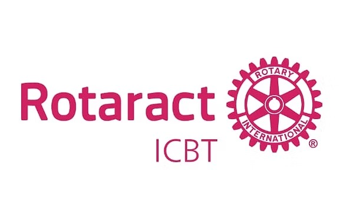

“Fellowship Through Service • Uniting Hearts Across Generations”
Rotary is one of the world's first and greatest non-profit service organizations, expanding globally to eradicate polio, foster peace, and build sustainable societies.
In 1968, Rotary inaugurated the Rotaract program — "Rotary in Action" — uniting young leaders aged 18 to 30. Today, over 250,000 Rotaractors across 180+ countries make a tangible difference in their local and global neighborhoods.
In Sri Lanka, Rotaract has thrived since 1969, boasting over 70 active clubs and 5,000+ members spanning diverse educational, corporate, and social backgrounds.

Officially chartered on July 1, 2018 under the distinguished sponsorship of the Rotary Club of Cinnamon Gardens, the Rotaract Club of ICBT unites 70+ scholars and professionals driven by one collective heartbeat: to serve humanity.
To transform the noble ambitions of collegiate youth into enduring, sustainable humanitarian actions through purposeful service, ethical leadership, and innovation.
To ignite worldwide positive change and illuminate the extraordinary capability of collegiate youth when bound together in mutual respect, fellowship, and Rotary ideals.